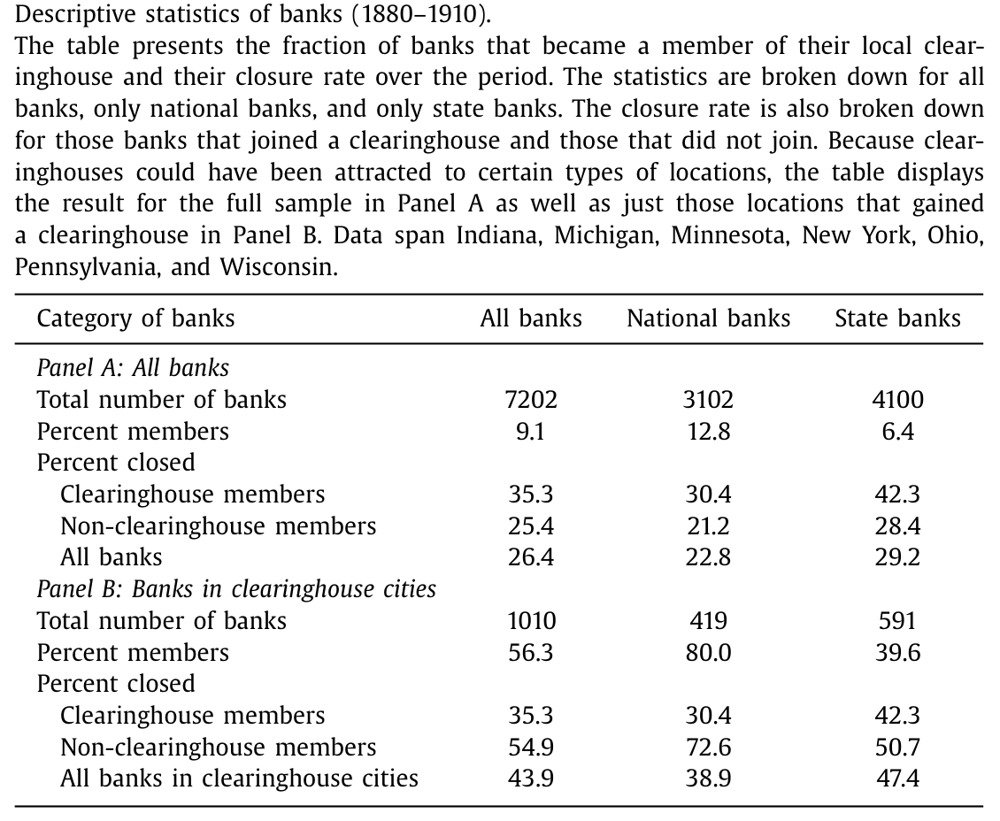
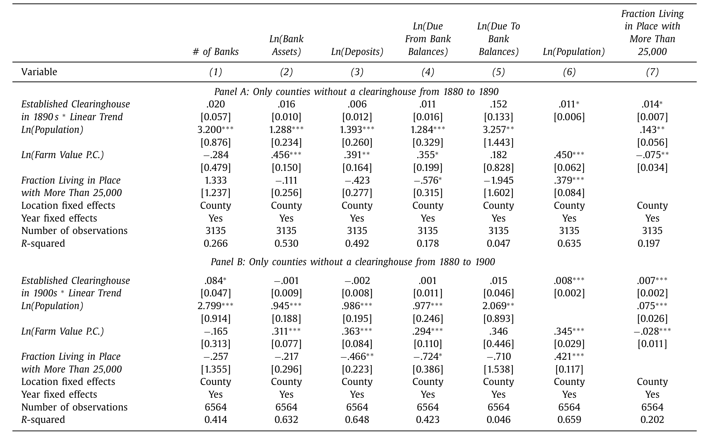
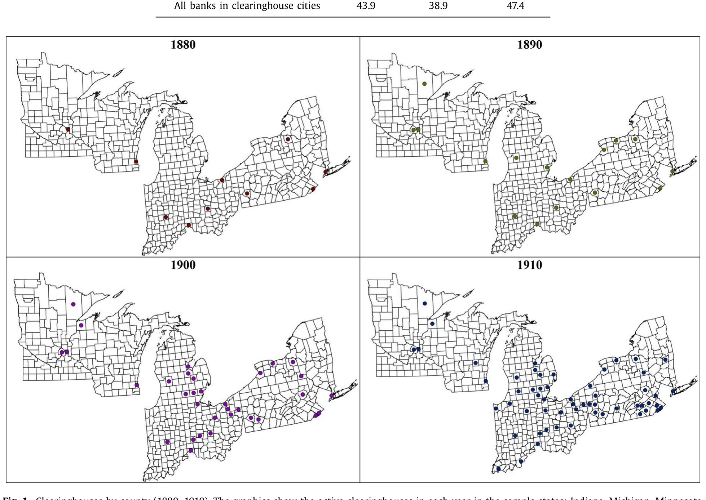
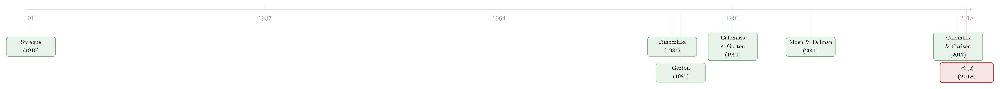

清算所：在美联储之前，半个国家的「最后贷款人」
本文读的是 Jaremski (2018, Journal of Financial Economics)：在美联储成立之前，城市里的私人清算所 (clearinghouse) 是最接近「中央银行」的机构，但它只救自己的会员。作者用 1880–1910 年七个州的银行级面板发现——清算所一旦进城，会员银行更不容易倒闭，同城的非会员银行反而更容易倒闭。原因不在于会员体质更好，而在于清算所把整座城市接进了同业网络、抬高了所有人的系统性流动性风险，却只在恐慌时给会员放水。
1 一个被忽略的「半个中央银行」
先讲一个画面。1907 年 10 月，纽约。尼克博克信托公司 (Knickerbocker Trust Company) 门口排起了长队，存款人挤兑，公司轰然倒下。它的问题不在于资产烂——后来的检查表明很多信托公司其实是有偿付能力的——而在于它不是清算所的会员。纽约清算所拒绝施救，理由是「这家公司资本与盈余已受损」，连摩根 (JP Morgan) 都说「不愿替别人糟糕的管理收拾烂摊子」。于是摩根只好亲自出面，拉着美国财政部和一群私人，临时凑出一笔钱去救那些被清算所拒之门外的非会员。
这就是美联储诞生前的美国金融体系：没有中央银行，但有两百多座城市各自为政的私人清算所。它们由本地商业银行凑份子组建，最初只是为了省下「跑腿费」——在那个普遍实行单一银行制 (unit banking)、几乎不准开分行的年代，一张支票要兑现，得派人或寄信去对方银行，距离越远成本越高。清算所提供一个集中的地点和时间，让大家把支票、银行券凑到一块儿轧差。但它很快「越界」了：监督会员、发布信息，并在金融恐慌时发行以抵押品为担保的清算所贷款凭证 (clearinghouse loan certificate)，扮演起准最后贷款人 (lender of last resort) 的角色。
用作者引述的话说，清算所「发展出的权力和职能，最像中央银行」(Gorton, 1985)。Timberlake (1984) 更直接：在没有中央银行的情况下，商业银行应对金融中心危机的办法，就是把清算所的功能一路扩展出去。
但关键的一点是：清算所只帮那些选择入会的银行。入会要交费、要接受资产负债表检查、要满足往往高于州法的资本和准备金要求。门槛把很多银行挡在了外面——比如纽约清算所因为准备金要求太高，没有一家信托公司愿意入会。在本文样本的清算所城市里，1010 家银行中也只有 56.3% 成了会员。
于是一个自然的问题浮出水面：清算所进城，到底是让整座城市更安全了，还是只让一部分人更安全、却把另一部分人推向了悬崖？
2 一个会误导人的简单对比
最朴素的做法，是直接比会员和非会员的倒闭率。作者把 1880–1910 年的数据摊开（如表 1 所示），结果乍一看是反直觉的：
全样本里，35% 的会员银行最终倒闭，而非会员只有 25% 倒闭。会员看上去更危险？

Table 1
但这是个陷阱。清算所开在哪里？开在金融中心、人口稠密的大城市——那里同业敞口最高、最容易被恐慌波及。而绝大多数非会员散落在同业风险极低、根本没有清算所的小镇上。拿大城市的会员去比小镇上的非会员，比的是地段，不是会籍。
真正该看的，是同一座城市内部的对比。把样本限定在那些 1910 年前确实出现过清算所的城市（表 1 的 Panel B），画面立刻翻转：会员的倒闭率仍是 35.3%，而同城非会员的倒闭率高达 54.9%。换算成年度倒闭概率，大约是会员 1.2% 对非会员 1.9%。同一座城、同一场恐慌，没拿到会籍的银行，倒闭的概率高出近六成。
这个落差是惊人的。但它本身还不能算因果——会不会是「好银行」自己选择入了会，「差银行」被挡在门外，于是我们看到的只是会籍上的选择性 (selection)，而非清算所的因果效应？这正是全文识别策略要解决的问题。
3 识别策略：先证明「选择」并不脏
作者没有急着上回归，而是先回答两个前置问题：谁建了清算所？谁入了会？ 如果这两个决定都和银行自身的风险挂钩，那后面的对比就会被污染。
第一步，清算所的选址。作者发现，建不建清算所，主要由地点的人口增长决定，而几乎与本地银行的风险状况、同业资金规模无关。逻辑很朴素：一天要轧差的支票数量，直接取决于这个地方有多少人、多少笔交易。样本里人口超过 3 万的 63 座城市，有 46 座在 1910 年前建了清算所；人口超过 6 万的 31 座城市，只有 2 座没建。清算所追的是人口，不是风险（如表 3 所示，清算所被「吸引」到的是高人口增长的地点）。
第二步，入会的决定。会员身份与一家银行的同城同行数量相关，而同样与它的同业资金、资产负债表风险无关。换句话说，决定入不入会的，是清算需求的体量，不是这家银行有多稳健或多冒险。
第三步——也是 DiD 类设计最致命的命门——事前趋势 (pre-trends)。如果将要获得清算所的城市，在清算所到来之前就已经走在一条不同的轨道上，那「清算所之后」的差异可能只是趋势的延续。作者检验了清算所城市在清算所进入前的差异化趋势，结论是：不存在显著的事前差异趋势（如表 4 所示）。

Table 4: indicates that no differential trends exist in lo-
把这三步连起来，识别的逻辑就清楚了：清算所的进入是由人口（而非银行风险）驱动的，会籍是由同行数量（而非风险）驱动的，且事前没有差异化趋势。于是，在控制了资产负债表风险、本地经济增长、银行特征之后，同一城市内会员与非会员的倒闭率差异，可以被读作清算所带来的因果效应。作者甚至把样本进一步收紧到「最终会建清算所的城市」，结论依旧。
这套思路的精神和近年「进步时代银行监管」的因果研究一脉相承——靠历史制度的局部变异，把「监管」从「被监管者的体质」里剥离出来。关于同一时代用监管者独立性识别银行稳定的尝试，可参见《选不选他，决定了银行什么时候倒》。
4 数据：把半个美国的银行账本拼起来
要做这种「同城对比」，需要的是覆盖会员与非会员、跨越多年的银行级数据。作者把两套账本拼了起来：
- 国民银行的年度资产负债表，来自货币监理署 (Comptroller of the Currency) 的《年度报告》，覆盖每一年在营的每一家国民银行（1885 年缺失，1905 年部分项目被合并）。
- 州立银行的资产负债表，来自印第安纳、密歇根、明尼苏达、纽约、俄亥俄、宾州、威斯康星七个州的州级报告。
清算所与会员名单，则来自三套银行名录（Merchants and Bankers Directory、Rand McNally、Polks），逐年标明哪些城市有清算所、哪些银行是会员。县级经济变量来自 Haines (2004) 的人口普查数据库——由于普查十年一次，作者把各县按 1880 年边界聚合，并假设普查变量在两次观测间线性增长，以填补中间年份。
最终的面板含 81,721 个观测，覆盖 3102 家国民银行和 4100 家州立银行，跨 1880–1910 年，占当时全美一半以上的银行资产。样本七州里，到 1910 年共建起了 59 座清算所（如图 1 所示，清算所主要集中在各州的大城市）。

Figure 1: Clearinghouses by county (1880–1910). The graphics show the active clearinghouses in each year in the sample states: Indiana, Michigan, Minn
5 机制：清算所到底「给」了城市什么
到这里，最关键的一步来了。会员更稳、非会员更险——这个差异为什么存在？
通常的解释会说：清算所给会员提供了紧急流动性，所以会员更扛得住。这没错，但只说了一半。真正深刻的洞见在于：清算所同时改变了整座城市的风险结构，而代价主要由非会员承担。
机制是这样的。一座城市一旦有了清算所，就成了同业存款网络上的一个枢纽 (hub)。别的城市的银行纷纷把资金存进清算所会员那里，图的是它更广的清算网络和危机时的紧急资金通道。于是会员吸纳了更多同业存款。而非会员呢？ 它们也把自己的资金更多地存到别的银行去——因为它们（错误地）相信，清算所的存在会保护整座城市免受流动性冲击。
这就是反转所在。同业网络在平时确实提升了支付系统的效率（Sprague, 1910；Calomiris & Gorton, 1991；Wicker, 2000），但在季节性资金紧张的时刻，它会把某一处的特质冲击 (idiosyncratic shock) 传遍整个系统，酿成全国性恐慌。清算所抬高了所有银行的系统性流动性风险，却只在恐慌时给会员放水。非会员既被卷进了更危险的同业网络，又拿不到救命钱，于是成了最脆弱的那一群。
还有一层更微妙的负外溢。Moen and Tallman (2000) 翻检了当年《纽约时报》和《芝加哥每日论坛报》对清算所行动的报道——这些报道常常突出清算所对会员的「保护」，于是无形中降低了公众对会员的恐慌、却抬高了对非会员的恐慌。前面那家被点名「未获清算所或摩根援助」的尼克博克信托，正是这种舆论效应的牺牲品。也就是说，清算所可能把挤兑集中到了非会员头上，无论后者的资产质量如何。
这里有一个容易被忽略的细节：紧急流动性在 1890 年代「清算所券」出现之前，根本无法直接流到会员之外；即便后来能了，许多清算所也选择干脆不发。再加上利率对所有借款人固定、损失由会员按资本分摊，贷款委员会有强烈动机只放好贷款、并严查抵押品——这套机制天然是对内的。
把这些拼起来，本文的核心命题就立住了：清算所不是一个让整座城市更安全的公共品，而是一道把城市切成「圈内」与「圈外」的制度楔子。 它给会员的好处，部分正是以非会员承受的额外风险为代价的。
6 这是一则关于「中央对手方」的预言
为什么一篇讲十九世纪清算所的论文会发在 2018 年的 JFE？因为它讲的根本不是历史。
作者点破：这段历史，正是今天中央对手方 (central counterparty, CCP) 风险的一面镜子。和清算所一样，CCP 降低了单个会员的成本与对手方风险；但和清算所一样，清算的集中会放大系统性风险、把冲击沿网络传导到整个体系。当系统越来越集中、而风险控制措施没跟上时，历史上那个危机频发的同业体系，就是一则警世寓言。
这也和 2007–2009 危机的叙事遥相呼应。当年影子银行钻监管的空子扩张、通过 MBS 和 CDS 把自己接进存款机构，美联储对影子银行缺乏直接监督，既挡不住其冒险、也来不及向整个系统注入流动性——这正是「一个良好运转的中央银行，在它管不到的角落仍会造成负外溢」的现代版本。监管的「补丁拼凑」鼓励了监管套利 (regulatory arbitrage)：机构改变自己的形态去钻最松的法律。关于监管缝隙里这种「打地鼠」式的腾挪，可参见《被赶走的「坏掮客」去了哪里？》。
7 文献脉络
把这条线索捋一捋。最早把清算所写进经济史的，是把它当作支付与清算的效率装置来理解的——以及 Sprague (1910) 对国民银行时代历次危机的经典记述，奠定了「同业网络如何传导恐慌」的叙事。

接着，一批学者开始强调清算所的准中央银行面向：Timberlake (1984) 论证清算所协会承担了中央银行的角色，Gorton (1985)、Gorton and Mullineaux (1987) 则把它刻画为一种「信心的联合生产」与内生监管机制。然后，Calomiris and Gorton (1991) 把视角拉到系统层面，指出国民银行时代几乎所有全国性恐慌，都是特质冲击经由同业网络放大的结果。
但真正悬而未决的问题是：清算所的进入，对那些没入会的银行意味着什么？早期试图回答这个问题的 Moen and Tallman (1992, 2000) 与 Hoag (2011)，都把分析局限在芝加哥、纽约这一两座城市、1893 和 1907 这一两次恐慌上，结论彼此冲突。Jaremski (2015) 自己此前虽分析了清算所对国民银行的影响，却没有把会员与非会员分开。
本文 (Jaremski, 2018) 的位置就在这里：用横跨七州、三十年的银行级数据，第一次系统地把会员与非会员的命运分开测量，并把它接到当代 CCP 的政策辩论上——这也呼应了几乎同期的 Calomiris and Carlson (2017) 对同业网络在 1893 年恐慌中作用的微观研究。
8 评论与延伸（Q&A + 研究方向）
(a) 几个可能的疑问
Q：会员更不容易倒，会不会只是因为「好银行」才入得了会（选择问题）？
这正是作者花最大力气堵的漏洞。他证明了三件事：清算所选址由人口增长驱动、入会由同城同行数量驱动、两者都与银行的同业资金和风险无关，且清算所城市事前没有差异化趋势。在控制资产负债表风险后差异依旧，把样本收紧到「终将建清算所的城市」也依旧。当然，选择不可能被 100% 排除，但作者把它压到了很小的角落。
Q：非会员倒得多，会不会只是它们本来就更小、更弱？
同城对比 + 控制资产负债表风险，正是为了排除这一点。更重要的是机制证据：非会员倒得多，不是因为体质差，而是因为它们被卷进了更危险的同业网络、却拿不到紧急流动性，且舆论把挤兑集中到了它们头上。这是「制度地位」而非「资产质量」的故事。
Q：清算所到底是不是「中央银行」？
像，但只像一半。它会监督、发布信息、在恐慌时发贷款凭证，功能上确实最接近央行。但它有一个致命的不同——它只对会员负责。真正的中央银行（至少在理念上）要对整个系统负责。这「半个央行」的局部性，正是负外溢的根源。
Q：那为什么有银行宁可不入会？
因为入会有实打实的成本：交费、被检查、被要求更高的资本和准备金（这些往往是进入壁垒而非审慎监管）。对小而受监管轻的州立银行，这笔账未必划算——所以清算所城市里也只有 56.3% 入了会。问题在于，它们当时多半没意识到「不入会」会让自己在恐慌中暴露得更厉害。
Q：这跟今天的 CCP 有什么关系？会不会是过度类比？
类比的内核很硬：两者都通过集中清算降低个体成本与对手方风险，又都通过集中放大系统性风险、沿网络传导冲击。差别在于现代 CCP 有更完整的风控与监管框架。作者的告诫不是「CCP 等于清算所」，而是「当清算越来越集中、风控没跟上时，历史会重演」。
Q：清算所的紧急流动性真有那么排他吗，不能外溢给非会员？
在 1890 年代「清算所券」出现前，几乎完全不能。之后理论上可以发低面额票据给非会员，但许多清算所选择不发。叠加利率固定、损失由会员分摊的制度设计，贷款委员会天生只想救自己人。所以「会员专享」不是偶然，而是机制使然。
(b) 几个可能的研究问题与提案
1. 美联储成立，是否「拉平」了会员与非会员的命运？
【经济故事】本文的反面推论是：如果系统性流动性风险被一个对所有人负责的央行接管，那么会员与非会员的倒闭差异应当收敛。1914 年美联储成立正好提供了一个准实验。 【可行性】中。数据现成（本文样本可延伸到 1920 年代，叠加 Anderson, Calomiris, Jaremski & Richardson (2018) 关于「加入美联储的价值」的框架），识别上可用清算所城市 vs. 非清算所城市在 Fed 前后的 DiD。难点是 Fed 的加入本身是选择性的。
2. 把「同业网络中心性」直接量出来，作为倒闭的预测变量。
【经济故事】本文的机制是「枢纽地位 → 系统性风险」，但中心性大多是间接推断的。如果能用同业存款数据构造每家银行在网络中的中心性，就能直接检验「越靠近网络中心、恐慌时倒得越惨」。 【可行性】中。需要逐行的同业存款明细（Calomiris & Carlson 已示范可行），识别上可把网络中心性与恐慌冲击交互。数据采集成本高，但 doable。
3. 现代 CCP 会员资格的「负外溢」实证。
【经济故事】把本文的命题搬到今天：一家衍生品交易商成为某 CCP 的清算会员后，非会员的对手方是否承受了更高的流动性风险溢价？这是对「CCP 集中放大系统性风险」最直接的当代检验。 【可行性】中到低。需要 CCP 会员名单 + 双边/集中清算敞口数据（部分可从监管报送获得），识别可用会员资格变更事件。数据可得性是主要瓶颈。
4. 「圈外」银行的资产端反应：它们有没有自我保护？
【经济故事】本文聚焦倒闭率，但非会员若理性，应当在清算所进城后调整资产负债表（多持现金、少做同业）。检验它们有没有、以及多快学会自保，能区分「无知」与「无奈」两种解释。 【可行性】高。本文的银行级资产负债表面板已经够用，直接做「清算所进入 × 会员身份」对现金、同业存款比例的事件研究即可。
5. 把视角搬到公司债/信用市场：「准 CCP」的信息外溢。
【经济故事】本文最微妙的一条线是「清算所保护会员的舆论，把挤兑集中到非会员」。在今天的信用市场，是否存在类似的「被官方背书 vs. 未被背书」的信息分割——比如央行合格抵押品清单内外的债券，在压力期的流动性命运是否分化？（与《央行的「合格清单」》的问题天然相邻。） 【可行性】高。合格抵押品清单的纳入/剔除是清晰的事件，TRACE 等交易数据可测流动性，识别策略成熟。
9 我的判断
这篇文章最漂亮的地方，是它把一个看似温暖的制度——「商业银行自发互助的最后贷款人」——拆出了它冷峻的另一面：任何只覆盖一部分系统的安全网，都会对网外的人产生负外溢。 这个洞见超越了金融史，直指今天 CCP、存款保险、央行流动性工具的设计哲学。把「半个央行」这个概念落到 81,721 条银行级观测、用同城对比 + 事前趋势检验严肃识别出来，是教科书式的经济史实证。
我对识别仍有两点保留。其一，会籍内生性虽被压到很小，但「不可观测的银行质量」无法完全排除——尤其入会要过资产负债表检查，这道检查本身可能就在做我们看不见的筛选。作者用「同城对比 + 控制风险」缓解了它，但读者心里要给这条留一道口子。其二，机制证据更多是叙事性的：同业网络中心性、舆论集中挤兑这两条核心链路，靠的是历史叙述和间接推断，而非直接对网络结构的测量。如果能把每家银行在同业网络里的位置量化出来、再去解释倒闭，这个故事会从「可信」升级到「钉死」。
接下来我最想看到的，是把这条线推到 1914 年之后——美联储的到来，究竟有没有抹平会员与非会员的鸿沟？ 如果抹平了，那是对「系统性安全网应当全覆盖」最有力的历史背书；如果没有，那说明问题比「有没有央行」更深。这是本文逻辑的自然终点，也是它留给后人最值得做的一道题。
参考文献
Anderson, H., Calomiris, C., Jaremski, M., Richardson, G. (2018). Liquidity risk, bank networks, and the value of joining the Fed. Journal of Money, Credit and Banking 50, 173–201.
Calomiris, C., Carlson, M. (2017). Interbank networks in the National Banking Era: their purpose and their role in the Panic of 1893. Journal of Financial Economics 124, 434–453.
Calomiris, C., Gorton, G. (1991). The origins of banking panics: models, facts, and bank regulation. In Hubbard, G. (Ed.), Financial Markets and Financial Crises. University of Chicago Press, 109–174.
Gorton, G. (1985). Clearinghouses and the origin of central banking in the United States. Journal of Economic History 45, 277–283.
Gorton, G., Mullineaux, D. (1987). The joint production of confidence: endogenous regulation and 19th century commercial-bank clearinghouses. Journal of Money, Credit and Banking 19, 457–468.
Hoag, C. (2011). Clearinghouse membership and deposit contraction during the Panic of 1893. Cliometrica 5, 187–203.
Jaremski, M. (2015). Clearinghouses as credit regulators before the Fed? Journal of Financial Stability 17, 10–21.
Jaremski, M. (2018). The (dis)advantages of clearinghouses before the Fed. Journal of Financial Economics 127, 435–458.
Moen, J., Tallman, E. (1992). The Bank Panic of 1907: the role of the trust companies. Journal of Economic History 52, 611–630.
Moen, J., Tallman, E. (2000). Clearinghouse membership and deposit contraction during the Panic of 1907. Journal of Economic History 60, 145–163.
Sprague, O. (1910). History of Crises under the National Banking System. National Monetary Commission, Washington, DC.
Timberlake, R. (1984). The central banking role of clearinghouse associations. Journal of Money, Credit and Banking 16, 1–15.
Wicker, E. (2000). Banking Panics of the Gilded Age. Cambridge University Press.